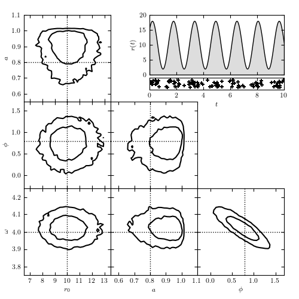

Arrival Time Analysis¶
Figure 10.24
Modeling time-dependent flux based on arrival time data. The top-right panel shows the rate r(t) = r0[1 + a sin(omega t + phi)], along with the locations of the 104 detected photons. The remaining panels show the model contours calculated via MCMC; dotted lines indicate the input parameters. The likelihood used is from eq. 10.83. Note the strong covariance between phi and omega in the bottom-right panel.
{kind=link}
Number of observed photons: 104
@pickle_results: computing results and saving to 'arrival_times.pkl'
# Author: Jake VanderPlas (adapted to PyMC3 by Brigitta Sipocz)
# License: BSD
# The figure produced by this code is published in the textbook
# "Statistics, Data Mining, and Machine Learning in Astronomy" (2013)
# For more information, see http://astroML.github.com
# To report a bug or issue, use the following forum:
# https://groups.google.com/forum/#!forum/astroml-general
from __future__ import print_function, division
import numpy as np
from matplotlib import pyplot as plt
import pymc3 as pm
from astroML.plotting.mcmc import plot_mcmc
from astroML.utils.decorators import pickle_results
# ----------------------------------------------------------------------
# This function adjusts matplotlib settings for a uniform feel in the textbook.
# Note that with usetex=True, fonts are rendered with LaTeX. This may
# result in an error if LaTeX is not installed on your system. In that case,
# you can set usetex to False.
if "setup_text_plots" not in globals():
from astroML.plotting import setup_text_plots
setup_text_plots(fontsize=8, usetex=True)
# ------------------------------------------------------------
# Create some data
np.random.seed(1)
N_expected = 100
# define our rate function
def rate_func(t, r0, a, omega, phi):
return r0 * (1 + a * np.sin(omega * t + phi))
# define the time steps
t = np.linspace(0, 10, 10000)
Dt = t[1] - t[0]
# compute the total rate in each bin
r0_true = N_expected / (t[-1] - t[0])
a_true = 0.8
phi_true = np.pi / 4
omega_true = 4
r = rate_func(t, r0_true, a_true, omega_true, phi_true)
# randomly sample photon arrivals from the rate
x = np.random.random(t.shape)
obs = (x < r * Dt).astype(int)
print("Number of observed photons:", np.sum(obs))
# ----------------------------------------------------------------------
# We need to wrap it in a function in order to be able to pickle the result
@pickle_results('arrival_times.pkl')
def compute_model(draws=5000, tune=2000):
# Set up and run our MCMC model
with pm.Model():
r0 = pm.Uniform('r0', 0, 1000)
a = pm.Uniform('a', 0, 1)
phi = pm.Uniform('phi', -np.pi, np.pi)
log_omega = pm.Uniform('log_omega', 0, np.log(10))
y = pm.Poisson('y', mu=rate_func(t, r0, a, np.exp(log_omega), phi) * Dt,
observed=obs)
traces = pm.sample(draws=draws, tune=tune)
return traces
traces = compute_model()
labels = ['$r_0$', '$a$', r'$\phi$', r'$\omega$']
limits = [(6.5, 13.5), (0.55, 1.1), (-0.3, 1.7), (3.75, 4.25)]
true = [r0_true, a_true, phi_true, omega_true]
# ------------------------------------------------------------
# Plot the results
fig = plt.figure(figsize=(5, 5))
# This function plots multiple panels with the traces
plot_mcmc([traces[i] for i in ['r0', 'a', 'phi']] + [np.exp(traces['log_omega'])],
labels=labels, limits=limits, true_values=true, fig=fig,
bins=30, colors='k')
# Plot the model of arrival times
ax = fig.add_axes([0.5, 0.75, 0.45, 0.2])
ax.fill_between(t, 0, rate_func(t, r0_true, a_true, omega_true, phi_true),
facecolor='#DDDDDD', edgecolor='black')
ax.xaxis.set_major_formatter(plt.NullFormatter())
ax.set_xlim(t[0], t[-1])
ax.set_ylim(0, 20)
ax.set_ylabel('$r(t)$')
# Plot the actual data
ax = fig.add_axes([0.5, 0.7, 0.45, 0.04], yticks=[])
t_obs = t[obs > 0]
ax.scatter(t_obs, np.random.RandomState(0).rand(len(t_obs)),
marker='+', color='k')
ax.set_xlim(t[0], t[-1])
ax.set_ylim(-0.3, 1.3)
ax.set_xlabel('$t$')
plt.show()